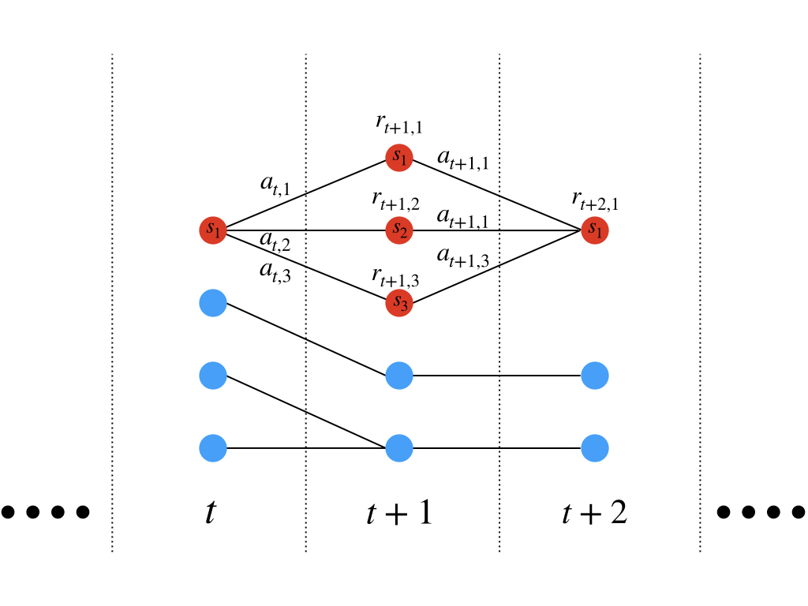
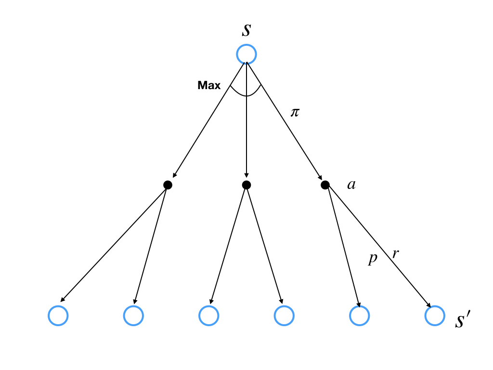
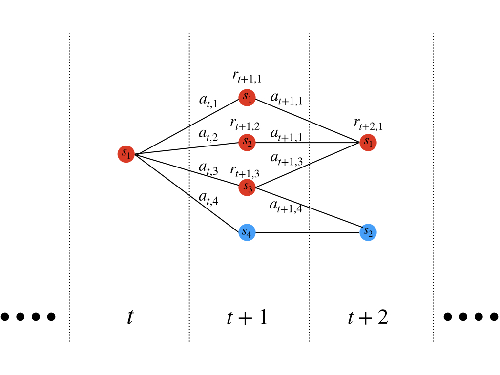
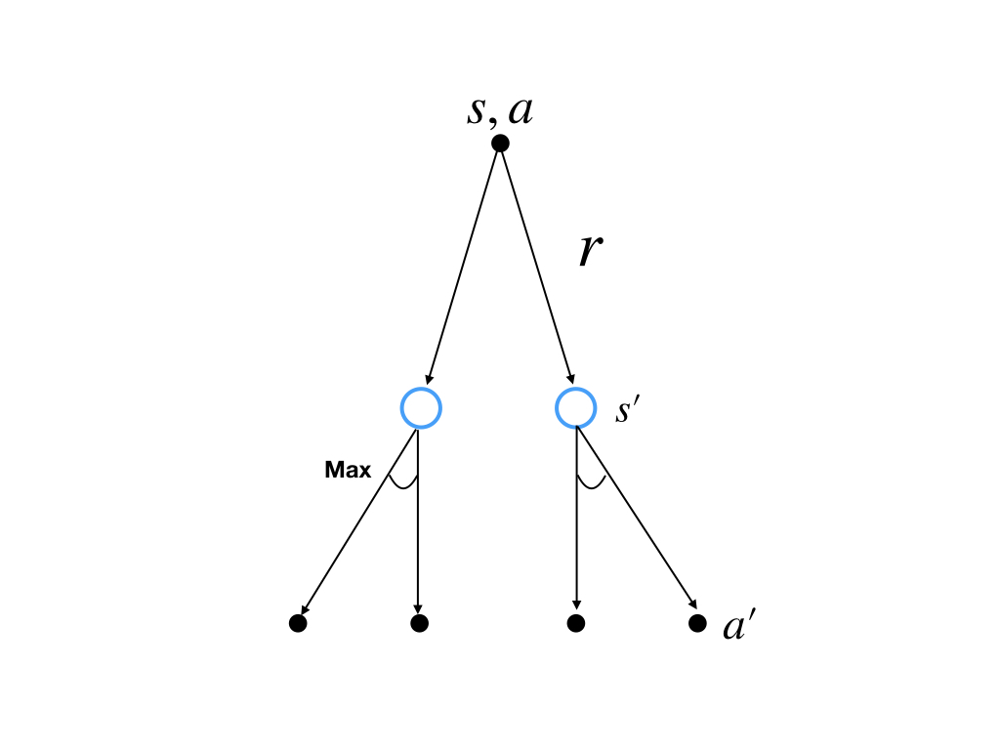

(draft)Optimal Policies and Optimal Value Functions
Abstract: Some concepts in reinforcement learning especially the MDP task had been discussed in previous posts, like: 1. agent and environment 2. policies and value 3. return and episodes 4. policy and value function
In this post, we talk about another two concepts -- policies and value function.
Policy
We have known that the goal of the agent is to maximize its cumulative rewards. However, the purpose of the algorithm designer is not the rewards but the policy the agent learned during the learning process. And to solve a reinforcement learning task, finding a policy to achieves a lot of rewards of the long run is a good strategy.
To the finite MDP, we can compare two policies. It means that we can identify which policy or pilicies is better than others. The definition of 'policy \(\pi\) is better than \(\pi'\)' is: > policy \(\pi\) is better than \(\pi'\) if the return of policy \(\pi\) at all states that: \[ v_{\pi}(s)\geq v_{\pi'}(s)\tag{1} \]
According to the definition of the comparison of policies above, there exists the best policy for finite MDP(for the MPD with infinity steps has infinity policies). The best policies are called optimal policies. There may be more than one policy that achieve the greatest cumulative rewards. They share the same state-value function and the state-value function is called the optimal state-value function. And the optimal policy is denoted as \(\pi_{*}\) . Its definition is: \[ v_{*}\doteq \mathop{max}_{\pi} v_{\pi}(s)\tag{2} \]
for all \(s\in \mathcal{S}\).
This definition is clear. The only thing may confuse us is that the optimal policies share the state-value function. We can make it clear by the figure:

If at step \(t+2\), the state \(s_1\) has the greatest value, the state-value function of \(s_1,s_2\) and \(s_3\) at step \(t+1\) are the same based on the Bellman equation('Policies and Value Function'). However, if at time step \(t\) the agent starts from state \(s_1\) could achieve the optimal returns through multiple policies, it means \(r_{t+1,1}=r_{t+1,2}=r_{t+1,3}\) for their next state is the same(\(s_1\) at step \(t+2\)). So their action-value functions of different policies are the same:
\[ q_{\pi_1}(s,a)=q_{\pi_2}(s,a)=q_{\pi_3}(s,a)\tag{3} \]
and we denote the optimal action-value function as \(q_{*}\) and define it formally as:
\[ q_*(s,a)\doteq \mathop{max}_{\pi} q_{\pi}(s,a)\tag{4} \]
for all \(s\in \mathcal{S}\) and \(a\in \mathcal{A}(s)\). It can also be written in:
\[ q_*(s,a)=\mathbb{E}[R_{t+1}+\gamma v_*(S_{t+1})| S_t=s,A_t=a]\tag{5} \]
This is a conditional expectation given state \(s\) and action \(a\). \(v_*\) is value function of policy, so it satisfy self-consistency condition given by Bellman equation. So we can write the optimal value function of state in its Bellman equation:
\[ \begin{aligned} v_*(s)&=\mathop{max}_{a\in{\mathcal{A}(s)}}q_{\pi_*}(s,a)\\ &=\mathop{max}_{a} \mathbb{E}_{\pi_*}[G_t|S_t=s,A_t=a]\\ &=\mathop{max}_{a} \mathbb{E}_{\pi_*}[R_{t+1}+\gamma G_{t+1}|S_t=s,A_t=a]\\ &=\mathop{max}_{a} \mathbb{E}_{\pi_*}[R_{t+1}+\gamma v_*(S_{t+1})|S_t=s,A_t=a]\\ &=\mathop{max}_{a} \sum_{s',r}p(s',r|s,a)[r+\gamma v_*(s')] \end{aligned}\tag{6} \]
where \(R\), \(S\) and \(A\) are random variables. The last two lines of equation (6) are two forms of Bellman optimality equation for \(v_*\). And to finite MDP, it is unique solution.
Similarly, the Bellman optimality equation of \(q_*\) is: \[ \begin{aligned} q_*(s,a)&=\mathbb{E}[R_{t+1}+\gamma \mathop{max}_{a'} q_*(S_{t+1},a')|S_t=s,A_t=a]\\ &=\sum_{s',r}p(s',r|s,a)[r+\gamma \mathop{max}_{a'} q_*(s',a')] \end{aligned}\tag{7} \]
The Backup Diagram
optimal state-value function
The backup diagram of Bellman optimality equation of state is:

And once we got the optimal state-value function, we can modify the policy according it. One method is to assign nonzero probabilities to the actions who reach the state who gives the optimal value, for instatnce:

if stat at time \(t\) in state \(s_1\) we can assign \(\frac{1}{3}\) to the action \(a_{t,1}\), \(a_{t,2}\) and \(a_{t,3}\) but \(0\) to the action \(a_{t,4}\) for the state \(s_4\) at time \(t+1\) does not give the optimal return. This is a simplified strategy to assign pobabilities to each action, and it just search in one step which means we only concern the action from time \(t\) to time \(t+1\). It is called one step search. And its mathematical name is greedy which we have talked in bandit problem('the 10-armed Testbed') which means during search or decision procedure, we just select alternatives based only on local or immediate considerations.
optimal act-value function
The backup diagram of Bellman optimality equation of action is:

In this condition, it is much easier to modify the policy for \(q_*(s,a)\) is a function of action. And we can just select the action who produces the greatest value. It is no more necessary to concern about the successor state and their values. And the dynamices of environment is not required any more.
Bellman Optimality Equation in Reinforcement Learning
Solving Bellman optimality equation is a route to finding an optimal policy to solve the reinforcement learning problems. But it is rarly used, for it is akin to an exhoustive search. And it relies on 3 strong assumptions: 1. Accurately know the dynamics of environment 2. enough computation soruces 3. Markov property
Although using Bellman optimality equation to solve reinforcment learning problems derictly is almost impossible, there are many different decision-making method that can be viewed as way s of approximately solving Bellman optimality equation.
Optimality and Approximation
Optimal value function and optimal policies have been defined above. And basing an optimal value function, finding an optimal policy seems not so hard. However, in practice it is not so easy for it need extreme computational cost and a large amount of memory when there are a lot of states. Solving Bellman optimality equation could not be used derictly in practical task, but it is a way to understand the theoretical propertoes of various learning algorithms.